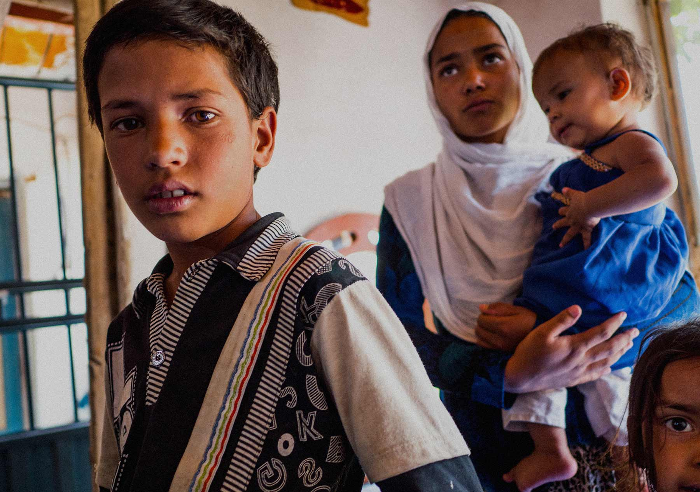
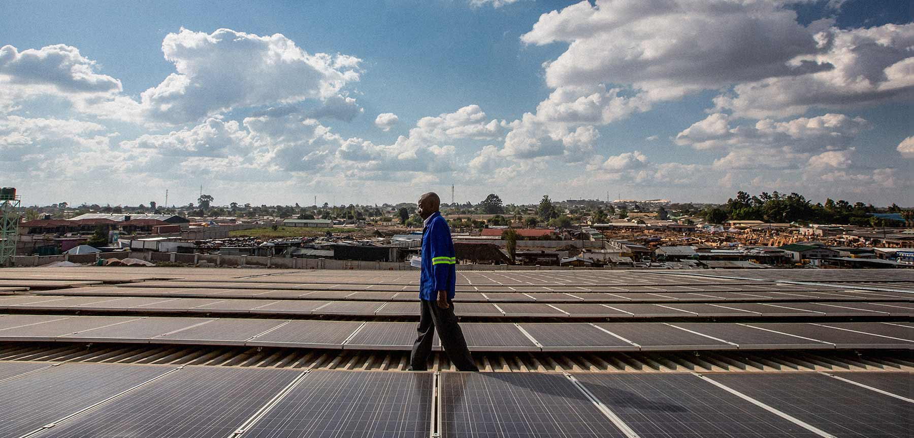
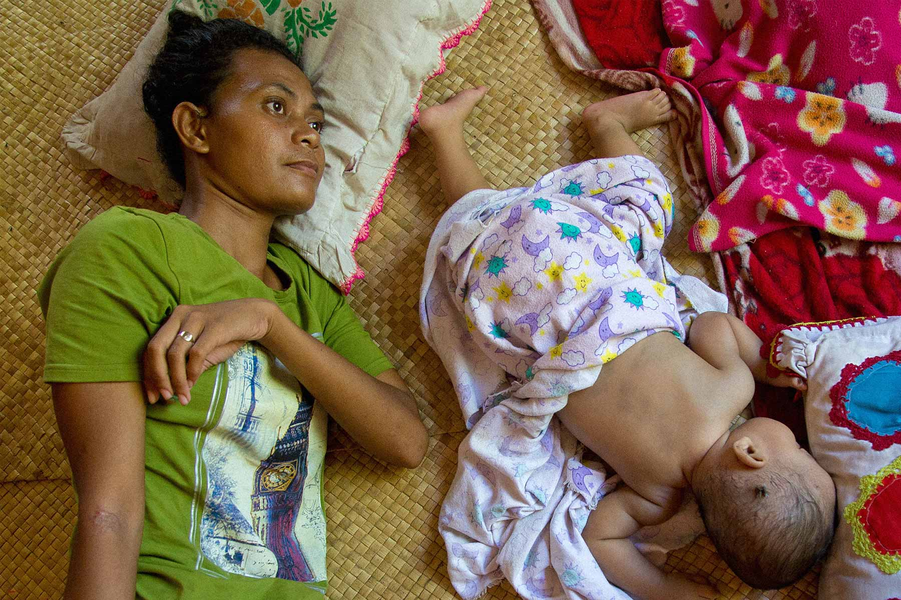
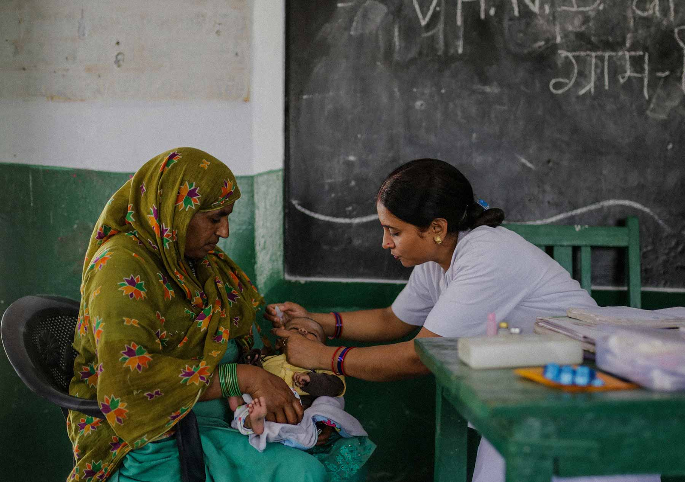

Capítulo 01
Panorama
©UNDP Afghanistan/Rob Few
La Agenda 2030 y los 17 Objetivos de Desarrollo Sostenible (ODS) abarcan los derechos humanos, el clima y el crecimiento económico, y trazan un camino claro hacia un futuro sostenible.
Si bien se está progresando, los resultados varían. Todos estos objetivos, que representan nuestra última esperanza para detener el cambio climático desenfrenado, se enfrentan a un enorme obstáculo en la forma de una desigualdad que va en aumento.

©UNDP/Karin Schermbrucker for Slingshot
El nuevo foco
de atención:
de atención:
la desigualdad
La desigualdad es una paradoja de nuestro tiempo. En las últimas décadas la innovación se ha disparado, la pobreza ha disminuido en todas las regiones del mundo y los mercados emergentes están en auge.
Sin embargo, las desigualdades persisten y aumentan, cruzándose y reforzándose entre sí y perpetuando la pobreza y la exclusión entre las generaciones.

©UNDP Tuvalu/Aurélia Rusek
La desigualdad ha puesto en peligro el crecimiento económico y ha creado una grave barrera para erradicar la pobreza, objetivo que es el fundamento de la Agenda 2030.


A continuación:
Definición de la desigualdad